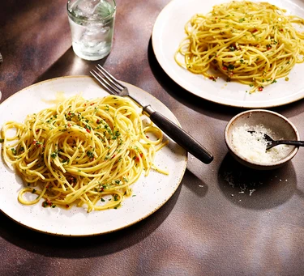

|

Prep Time: 3 mins | Cook Time: 12 mins |
Spaghetti Aglio e OlioToss golden garlic and silky olive oil through spaghetti to make this classic Italian dish – simple,flavorful, and perfect for busy days. Ingredients:
Instructions:
|

Prep Time: 5 mins | Cook Time: 2 mins |
Avocado ToastA quick and healthy breakfast loaded with creamy avocado and fresh toppings. Ingredients:
Instructions:
|

Prep Time: 10 mins | Cook Time: 15 mins |
Oatmeal PancakesHealthy pancakes made with oats and bananas for a delicious breakfast. Ingredients:
Instructions:
|